第二市場
地址： 400台中市中區三民路二段87號
1917年，臺中州廳政府於新富町(今中區三民路、台灣大道、中山路及興中街所圍成街廓)建立「新富町市場」，是臺中市現存歷史最悠久的傳統市場，市場內各通道以六角形放射狀排列，在中心會合，名為「六條通」，以精美的貨品品質、較高的售價服務於當時新富町的日本人，因此又有「日本人的市場」之稱。 第二市場另一項特色是水果市場的買賣，日據時期以香蕉為主要賣點，形成香蕉市仔，戰後則以販賣日本進口的蘋果、梨子為主，民國86隨著水果批發市場遷移至中清路後，往日風光不再，但仍然留下水果批發場地的木構造棚架，令人回味當時的水果市集盛況。臺灣光復後，第二市場仍持續發展且擴張中，並規劃311處攤(鋪)位(固定攤150攤、店鋪54間、臨時攤107攤)。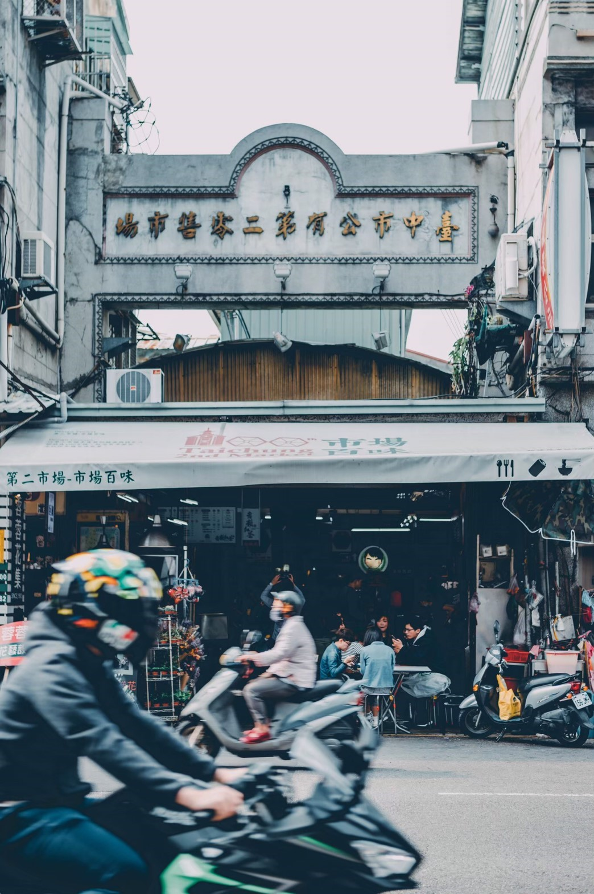
地址： 420台中市豐原區三民路218號
柳屋隱身在中山路257巷的柳川古道間，穿越曲折的巷弄與狹窄的通道，彷彿武陵人意外闖進桃花源。 柳屋原本是建築系學生楊廸的畢業設計；她花了兩年時間和一群朋友們一起整修了這棟老房子，保留了房屋大部分的結構，也試著讓另一些屬於當代的物質、符號與意象並置在這個空間裡。因此在柳屋能看到一道道時間的軸線，從清朝到日治、以至此刻的當下。 柳屋樸素而開放的空間，讓策展者能不受限地發揮創意。在他們的構想與發展過程裡，幾度轉換柳屋的使用目的和規劃，最後定調為一個美術館；理由在於中區少有藝術性空間。再則楊廸希望這裡可以是一個相對平實的展場，讓美術系與設計科系的學生不用花那麼多錢去找昂貴的空間策展。於是柳屋開始陸續有了各式的展覽。 關於未來也是她現在正在進行的是：希望這裡有更多不同有趣的事持續發生，包括平面的展覽或立體的展演，並促成各種不同身份與族群之間的對話。透過這些事作為一個吸引大家來到中區的理由，同時也讓中區的居民發現，他們熟悉的生活場域裡開始有一些不同於以往的事正在萌芽。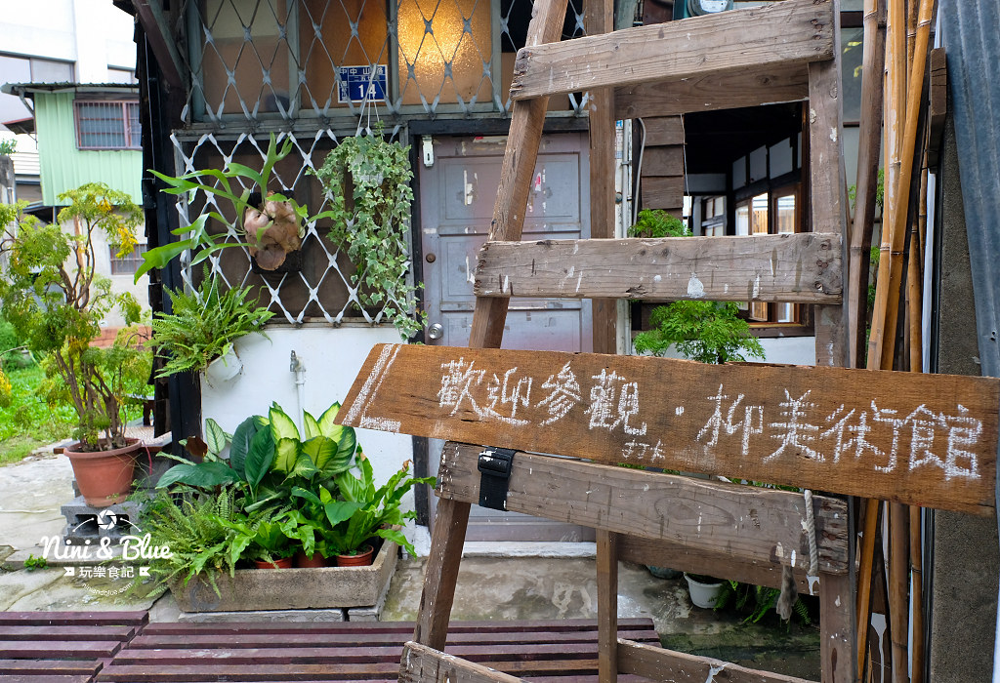
地址： 403台中市西區民權路99號
臺中州廳建於日治時期的官署建築，完工後先後成為日治之臺中州、後之臺中市的政府所在地。目前被列為臺中市市定古蹟保護。由於該建築最初是日治時期的臺中州廳（「州廳」等同於中文語法的「州政府」）使用，因而沿用成為對其之稱呼。台中州廳附屬建築群自日治時期起就被規劃作為總督府的廳舍，至今仍為台中市政府的辦公處所；州廳鄰近台中火車站，交通具便利性，其附近有商業區、飲食消費區和傳統的老街，充滿著歷史文化資源，州廳及附近建築群被列為歷史建築，此區域可說是歷史古蹟最為密集之地區，也因此，吸引許多外來遊客到此處參觀。 臺中州廳1912年動工，1913年完成第一期，經歷四次擴建，於1934年完成現行規模，由日人森山松之助設計。臺中州廳管轄臺中市市、彰化縣及南投縣地，臺中市役所才是當時臺中市政府。二戰後，臺中市政府遷入現址辦公至今，而臺中州廳則被臺中市列為市定古蹟。 臺中州廳整體設計為仿法國馬薩風格，正立面具有明顯的「馬薩」式屋頂。主體為L型平面二層樓建築，建築正面向東，中央有塔式突出建築，正立面左右各段「角樓」用以完整銜接兩翼建築物。一樓入口玄關有多立克式柱子，二樓則採愛奧尼克柱式，退縮的陽臺強化立面的陰影效果。臺中州廳建築為突顯其政治上的位階與都市中的重要性，並配合臺中市街計畫，將主入口設於重要街廊的轉角處，為日治時期官署建築的特徵。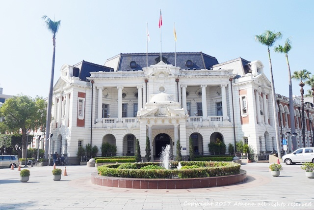
地址：台中市梅川西路
柳川是台中市中心四條重要河川之一，整治之後成為市區首座永續性生態工法開發的景觀河岸，白天的柳川呈現悠閒的氣息，水質清澈，可近距離欣賞水中的錦鯉，十分適合親子出遊踏青；而晚上的柳川充滿浪漫的氛圍，走在璀璨的燈火下，看著閃閃亮光的柳樹和裝置藝術天鵝，不僅是拍夜景的好地方，也適合情侶夜晚來此散步，也成為台中新興的熱門景點。除了是IG打卡拍照的好地方，也是一條會呼吸的河川，拓寬兩側護岸改為緩坡，有助排水及透水，並藉由滲透及蒸發，減輕暴雨逕流對排水系統的負荷，河岸下方設置水撲滿吸收水份，儲水回抽作為澆灌使用，河道下方則設置滲透性排水管（HDPE管），在枯水期與豐水期之間調整水源，創造出如同海綿般吸水的彈性空間，具有美感與儲水灌溉的功能。 而為兼顧水質及生態，柳川水源經過上游汙水截流送至中華水質淨化場處理後，現在已有顯著改善，由原先嚴重汙染降為輕度汙染；河岸旁除移植37株喬木，同時也新植38株水柳保留柳川風情，加上流蘇、台灣欒樹及光臘樹等台灣在地原生植栽共159株喬木，讓柳川河道一年四季皆有不同的景色。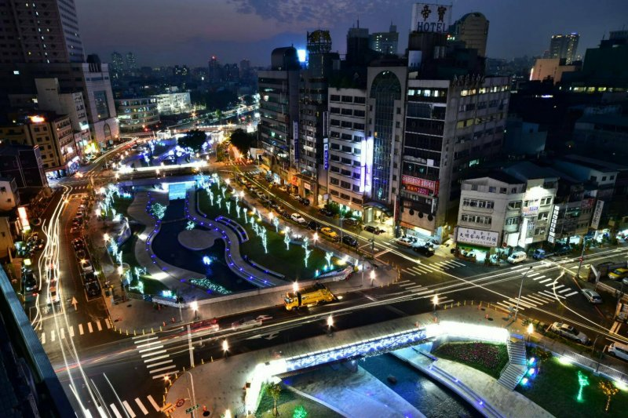
地址： 403台中市西區市府路8-1號
「公設質舖倉庫」是臺灣目前所知唯一保存之日治時期公營當舖設施，為中部地區當舖發展的歷史見證，當時提供庶民質借，見證中部地區當舖發展史，彰顯日治時期地方行政的內涵。1922年設置時主要有三組建物，分別為事務所、主事宿舍及二層樓磚造倉庫，現僅存二層樓磚造倉庫，其樓板構造因應了其承載儲放流當品之需求；紅磚牆面間以仿石材的帶狀混凝土裝飾，形成紅白相間的效果，模仿在臺灣盛極一時的「辰野式」建築手法，形式表現具地方風貌，建築構造具時代意義。 另公設質舖倉庫被發現前，歷經臺中市選舉委員會、主計處及環境保護局稽查大隊等不同單位使用，增設許多現代設施及鋪設現代磁磚，正立面上的臺中市市徽也被改為藍色，逐漸為人淡忘；修復時，細心剝除外層白色磁磚，露出建物原有清水磚溫潤的紅色色調，而由日治時期鐵道部員中村與松設計的市徽，以對稱「中」字結合圓形，表示團結一致，則恢復為灰色；另外，一樓樓梯口的地磚印痕也保持原貌。 臺中市役所現階段已OT委外方式由「古典玫瑰園」旗下的現代審美文創藝術公司營運，緊鄰的公設質舖倉庫還原歷史原貌及活化後也由現代審美文創藝術公司規劃為「昭和沙龍」，提供民眾遊憩與文創餐飲空間，結合餐飲服務及文創概念，以打造別具特色之文化基地。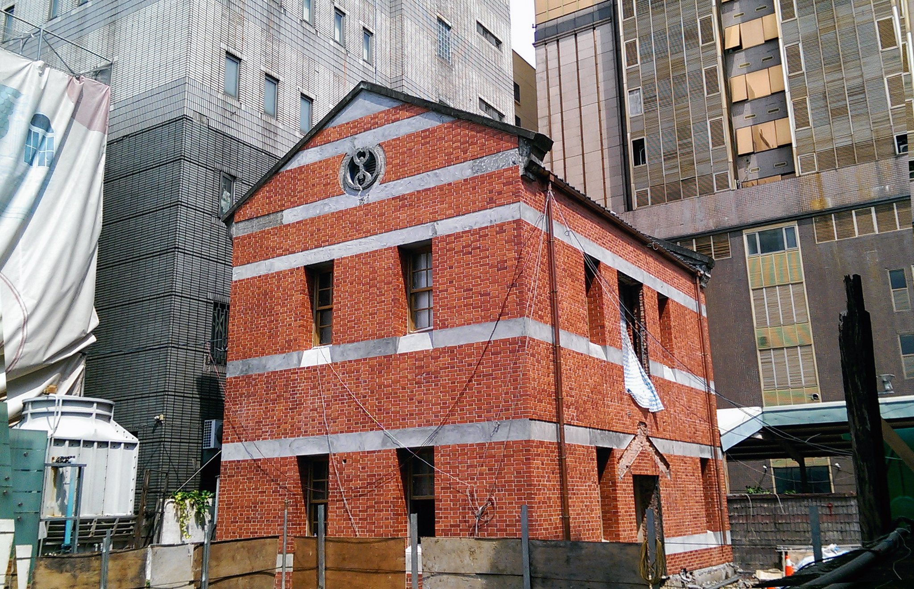
地址： 403台中市西區民權路97號
歷史建築臺中市役所創建於1911年，為台灣臺中市日治時期的「辰野式」仿巴洛克建築之一，，是臺中首見的鐵筋混凝土建築，也是舊城區中最耀眼的指標建物，更是日治時期全臺最華麗之市役所，隨著第二期修復工程的竣工，期盼已久的市役所已於105年2月27日(六)下午1時50分，藉由開門儀式，開啟期盼已久的市役所重現風華。 重拾風采後的市役所於2005年定位為「臺中故事館」，作為臺中在地人文故事藝廊，成為本市藝文展演重要場館之一。 為落實文化資產的活化再利用，文化局徵選出國內具豐富文創經營經驗的古典玫瑰園旗下的現代審美文創團隊進駐，未來在文化局與古典玫瑰園團隊的合作下，重新開幕的市役所將以「生活、文化、傳承」為經營理念，並結合餐飲服務及文創概念，期盼透過市役所為起點，推動文創經驗與文化教育，打造別具特色之文化基地，引領市民進入深刻的文化歷史回憶，用傳承與創意重新賦予時代意義，為這棟百年建築物，灌注全新的生命。 現在是一個結合餐飲, 文創及展覽的空間，讓大家欣賞古蹟的時候，還能坐下來用餐或喝杯茶，感受一下日治時代特有的氣息。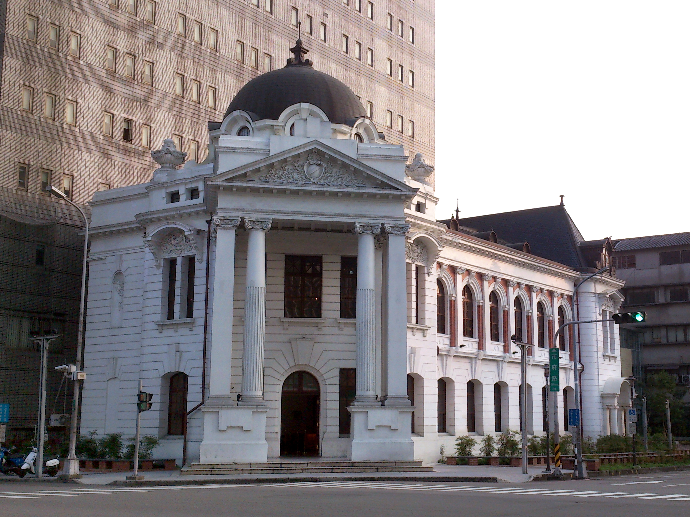
第三市場
地址： 400台中市中區三民路二段87號
第三市場或稱為敷島町市場，最初於1922年設立於櫻町，由於南臺中的人口激增，場內空間極為狹隘不便，逐漸在外圍形成自然市集，日本政府為了便於管理，花了3,700餘圓於敷島町現址興建了一座木造的摩登市場。成立不過短短四年(1932年)，市場就因為不敷使用而必須擴建，土地面積由原來的387坪一舉擴大為701坪，可容納固定攤位31處，二樓店鋪14間，還有不固定擺設的臨時攤商。主體結構為加強磚造，外牆建材改為防水紅磚，門窗外框以長方形砛石加固飾邊，一座結構穩固、充滿線條的現代化磚砌建築於焉聳立。前後山牆則鏤上當時正夯，於一年前(1921年)所頒佈的臺中市市徵。至於才使用四年的木料建材，則移至當時因新式糖廠興建而人口日增的石頭灘仔，興建了一座第四市場。所以第三市場在今日位址已有九十五年的歷史，承載了臺灣人近百年來的民生記憶，除了美食，您應該對她有更深入的瞭解。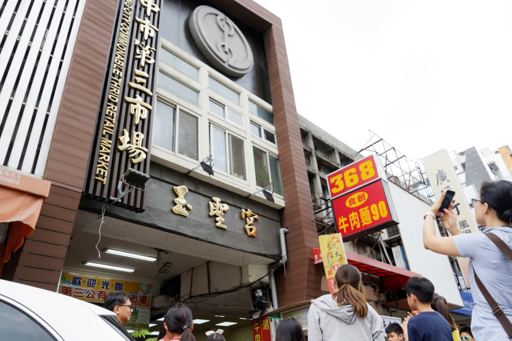
地址： 400台中市中區台灣大道一段1號
新台中火車站整體設計簡約柔和感、站前廣場、台中轉運站等設施，新前廣場巨型裝置藝術高八米半的巨型“期待”旅行男孩和水逗娘，能見到新舊合併後的台中車站經過轉型，也能同時欣賞難得保存下來的百年古蹟車站，台中舊車站建於1905年，1917年改建，屬於國定古蹟，台中新站工程挖到第一代車站維修坑道，加上第二代百年古蹟車站、換第三代新站接手，是全國難得一見「三代同堂」的車站。車站二樓平台上方也有裝置藝術比較低調卻頗有淡淡的微美感，藝術家-賴純純《臺中之心三部曲》創作：「生命之樹」、「大地之心」、「天空的眼睛」 ，以不鏽鋼、彩繪壓克力與馬賽克石材打造，把科博館收藏的鯨魚骨造型融入作品，磁磚拼貼馬賽克的活潑方式表達出，陽光、天空、大地、生命之樹，新生命的整體聯繫網絡，呈現自然界多元與萬物生生不息意象，象徵新臺中車站為城市帶來新生的力量。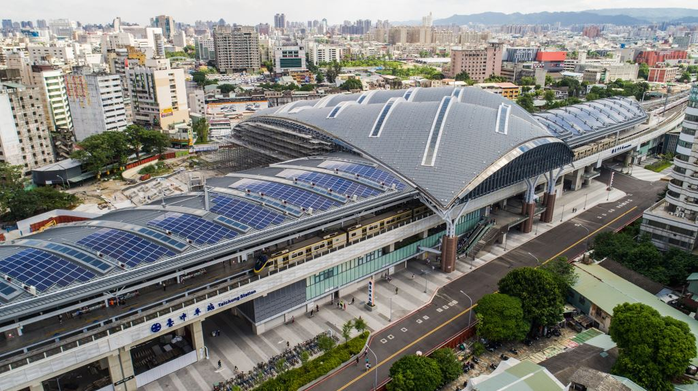
地址： 400台中市中區中山路20號
建造於西元1927年的宮原眼科是由日本眼科博士宮原武熊所興建，也是日治時代臺中規模最大的眼科診所，1945年日本戰敗，宮原武熊返回日本，宮原眼科變成了臺中衛生院，但隨著時代的物換遷移，老舊沒落的衛生院逐漸成了危樓，更在九二一大地震中變成了雜草叢生的廢墟。直到「日出」經營團隊耗時一年半，結合兩位建築師、一位古蹟修復博士所共同打造出現代感的日出宮原眼科。 保留具有年代歷史的老建築是一件非常不容易的事，但在「日出」團隊的巧思與努力之下，臺中宮原眼科不僅還存有老房子的氣息，改建整修後還能讓人感受到歷史的感動，著實是一座令人嘆為觀止的建築，天花板的透光玻璃將光線自然引進，陽光灑進屋裡甚是美麗；室內的裝潢也相當有氣勢，挑高的設計像極了哈利波特內霍格華茲學院的場景，以木頭建造的書架和櫃子營造出一種特有的質感美。 復古包裝的糕點是最受大家歡迎的伴手禮，有著精緻包裝又美味可口的點心，送禮自用兩相宜唷！來到宮原眼科，千萬不可錯過這裡招牌的冰淇淋，多種口味都是獨家特製配方，如果您以為只有口味特別那就太小看宮原了，冰淇淋旁的配料更是讓人驚呼連連，整塊的土鳳梨酥、乳酪蛋糕、杏仁雪球等等。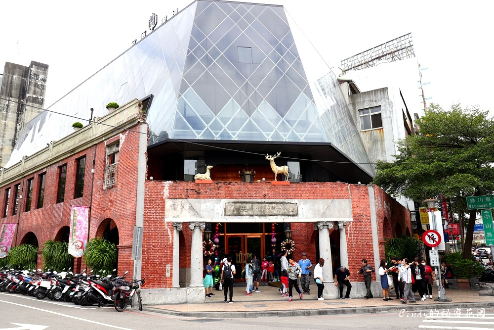
地址： 400台中市中區中山路72號
繼「宮原眼科」後，以製作糕餅出名的日出集團，再次打造台中老建築新亮點——第四信用合作社。這是一棟落成於民國55年的建築，新改造的第四信用合作社沿用原有名稱，整體建築刻意保留舊有的鋼筋水泥外貌，露出建築結構與橫樑，創造出古今交錯的美感。內部裝潢上則是採復古風格，如壁上掛著過去合作社員工的照片、騎樓的磨石子地板、二樓吧檯櫃檯底下的瓦片、金庫造型的大門等，營造出當時合作社的氛圍。 四信用合作社的騎樓販售豐仁冰與各式水果挫冰，利用手搖式的古早味剉冰機，設計成水果冰磚，再以果凍、海藻糖點綴，不僅可口又賞心悅目。一樓內部販售多種口味冰淇淋，冰淇淋以經典老歌命名，別具特色。 用餐區的空間設計上，合作社將金黃色的燈飾懸吊於未經修飾的天花板下，製造出一種昏暗卻又巧妙的違和感。二樓則是販賣各式冷飲、滷味、點心等等。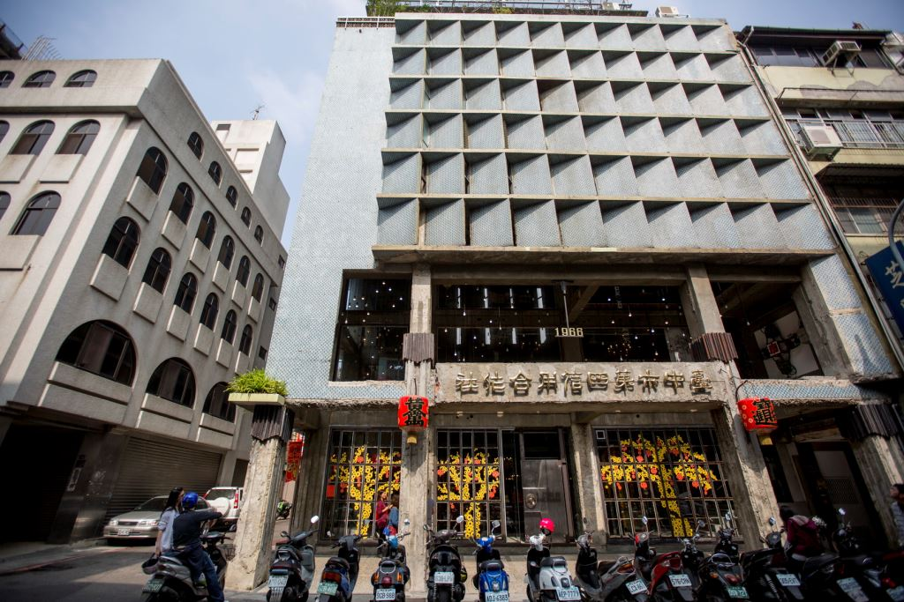
中區綠川原名「新盛溪」，於1912年更名，是日據時期臺中「小京都」計畫中的亮點河川，小小一條新盛橋(現中山綠橋)是當時臺中八大夜景之一。綠川興盛橋以水質及防洪為優先考量，打破傳統水岸景觀整治方式，企圖營造為生態棲地、結合低衝擊開發的環境，打造臺中火車站新生水岸門戶意象。
綠川水岸以自然及藝文展現為主題，導入公共藝術並運用水元素，創造多元創意藝術舞動空間，並融合多元東協風情。結合宮原眼科及中山綠橋、櫻橋遺跡等歷史建築，營造具人文氣息的景觀河岸，形塑人文水岸空間氛圍。承昔往日沿岸綠蔭的記憶，以台灣原生樹種及護岸垂懸植物，呈現獨特的水路空間，建築新的綠川林蔭步道。
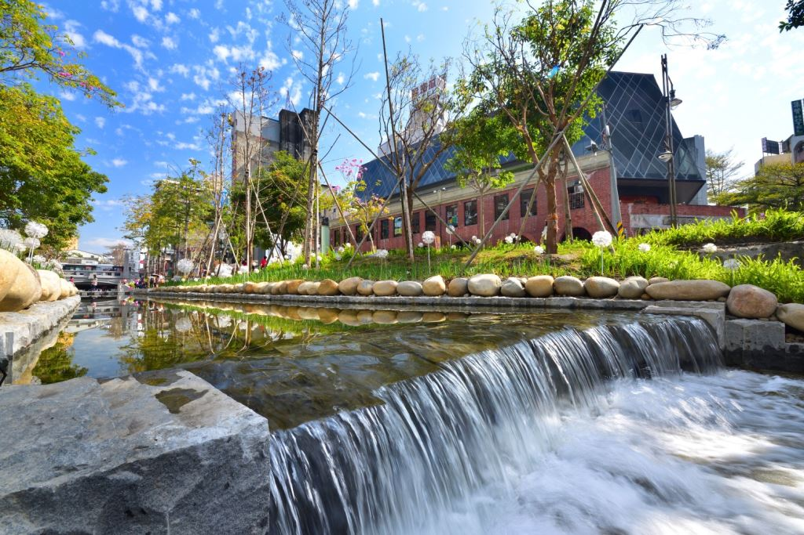
地址： 402台中市南區復興路三段362號
佔地5.6公頃，前身為創立於1916年日治時期的民營「大正製酒株式會社」，在1922年日本政府實施酒類專賣制度後被收歸官有，1928年成為當時全台最大的釀酒工場。 1945年台灣光復之後，酒廠兩度更名為「台中酒工場」、「第五酒廠」。1947年政府改菸酒專賣為公賣，由台灣菸酒公賣局接管，1957年再度更名為「台灣省菸酒公賣局台中酒廠」。 隨著時代變遷，及因應台中市都市計劃規劃發展之需，台中酒廠於1998年搬遷到台中工業區新廠，留下大片工業遺址與歷史建築。2002年7月台中市政府將全區主要建物登錄為歷史建築，舊酒廠得以完整保留。現發展成為文化部五大文化創意產業園區之。舊台中酒廠從此由製酒工業遺址活化新生，蛻變成文化創意產業的推展基地。 行政院文化建設委員會規畫為創意產業發展計畫中的五大創意文化園區之一－「台中文化創意產業園區」，作為台灣文化創意產業推展基地，定位發展成台灣建築、設計與藝術展演中心。 現今各館廠已有全新的身分，過去渭水樓曾是包裝材料倉庫，今為園區的圖書館所在地；雅堂館原為米酒成品倉庫及半製品儲酒庫，如今則作為多功能用途的大型展覽場，為臺灣的文創大業盡力。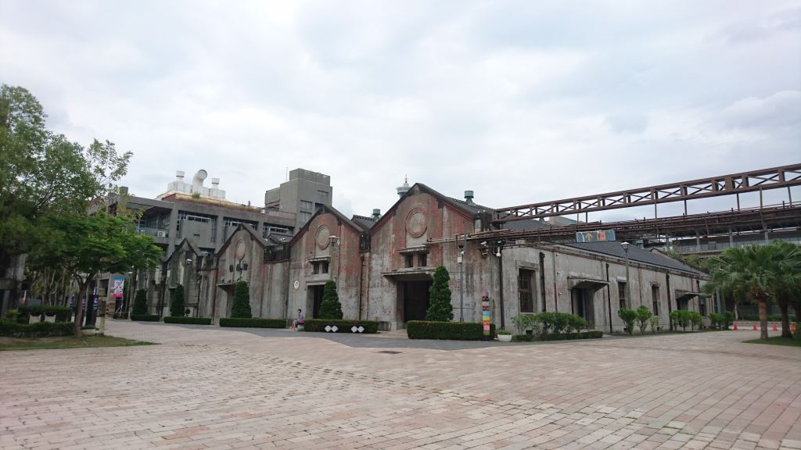
地址： 403台中市西區林森路33號
台中刑務所演武場，興建於日治時期昭和12年(西元1937年)，為司獄官、警察日常練武之武道館舍，屬本市僅存之演武場，歷史原貌保存完整， 極具保存、再利用及建築研究價值。 演武場建築群包括演武場主體建築及東側附屬建築，主體建築依對稱型式建造，中央後側設有神龕，面對神龕左側為柔道場、右側為劍道場，演武場內僅單側設有座席，與同時期類似建築武德殿相較，屬較小之武道設施。建築形式屬日治時期典型演武場，座基抬高，立面仿木結構及壁柱飾樣，屋頂入母式屋頂建造，有大型鬼瓦及博風板裝飾。 惟和館是台中刑務所演武場主體建築，正門頂部鑲有「武」字鬼瓦，格局方正，基座挑高，頗顯正大威武之氣勢。原作為劍道、柔道使用空間。 道禾文化沙龍有新六藝文化的劍道推廣課程，還會舉辦各式節氣茶會、茶樂雅集、道禾師塾，實施經典、文化、教育、藝文、電影、生活等各系列主題講座及研習活動。 心行館(原俱樂部)，有茶道、古琴、圍棋、水墨、篆刻推廣課程，附設「小書房」經營經典、教育、文學、藝術出版品、台中主題文創作品、六藝文化及具紀念性產品。 傳習館(原宿舍) ，有演習「弓道」、「書法」及各式藝文展覽，藉由生命之真實相與於傳習中，反求諸己之忠信，以證其傳習。像是弓道、書道、紙藝推廣課程、互動式導覽劇場活動以及文物暨文化藝文展覽。 大樹劇場(戶外舞台區暨庭園) 日明治28年(1895) 老榕樹便已在現今的林森路旁扎根，盡情舒展。雖然在民國95年(2006)遭受祝融之災，但「根」卻留了下來。而在民國99年，中央政府與台中市政府的共同努力下，老榕樹再度擁抱這片土地，如同我們的文化，重新灌溉這片土地。有茶樂雅集、戲劇、音樂等藝文展演活動以及互動式導覽劇場。
第五市場
地址： 40345台中市西區大明街9號
發展遠溯及民國二十七年，時值日據時代，當時台中市市集發展略具雛形，市中心主要在火車站、台中公園及台中市政府周遭，其他大部分地區仍為農田，農人為創造大頭菜等作物的經濟價值，遂以特大醃缸醃製大頭菜，並在樂群街與自立街公有宿舍及偌大空地旁做醃菜製作與儲存之場所。隨著地方民眾至此購置醃菜，開始有販夫走卒至此兜售相關民生必需品，使該地逐漸具攤販市集形態，因為，當地不僅能購置醃菜，同時具提供民生必須用品之市集雛形。民國五0年代，市政府為便利市民購置民生必需品與食品衛生安全等因素之考量，在前台灣省政府之輔導與協助下，始乃搭設鋼棚，以提供交易場所，並引導市集攤販進入市場營業。嗣後又增建店鋪與固定攤位，至此，第五市場雛形粗具。 第五市場被作家劉克襄喚作「舊城的心肺」，是日據時期販售農產品的重要市集，到了戰後陸續吸引各行業入駐，因此又被老一代的台中人稱為「第五百貨」，此地至今仍是台中市民主要購買生活用品的中心，吸納了各式各樣的庶民文化色彩。市場內共計122攤，無空攤，其中丸東商號、Aboku 88、松源生活平安皂專賣店等受經濟部中部辦公室評核三星等名攤。 一般民眾過去對於菜市場的記憶多是髒亂、潮濕，但第五市場重視廁所節水以及市場綠美化，擁有媲美五星級飯店的廁所，是臺中第一座榮獲經濟部中部辦公室「綠色市集」認證的傳統市場。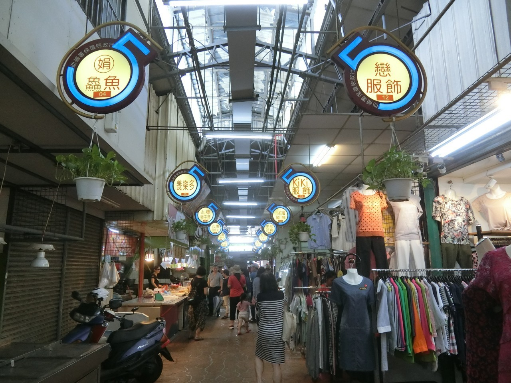
地址： 403台中市西區樂群街38號
為台中首座以文學為主題的公園，進入園區可見檜木搭建的古老日式建築，為1932年日治時期建造的警察宿舍群，原為面臨剷平拆除的廢墟，後來經過各方搶救被保存下來，103年開始進行修復工作，改建為台中文學館，用以推廣在地文學家作品，培育市民文學涵養向下扎根，預計六棟館舍將規劃常設展、主題特展、兒童文學展、主題餐廳等，並舉辦相關的展演講座活動，拓展文學更多的可能性。 漫步在園區，撲鼻而來的陣陣檜木香，映入眼簾的日式建築、古樸的木板迴廊及綠意的庭院造景，環境清幽恬靜，讓人有如置身於日本街頭的錯覺，是一處充滿日式建築與文學氣息的場域。園區中央豎立一棵令人驚豔的珍貴老榕樹，被視為來到台中文學館必賞的風景，榕樹高達約3層樓高，因歷史悠久，形成特殊的氣根廊穴景觀，視覺上相當壯觀，吸引許多人在此處拍照留念，若是仔細觀察還會發現一台前人所留下的腳踏車，被氣根盤根錯節包覆沒有拆除，使人深刻體會到景物依舊，物換星移、人事已非的感受。 台中文學公園除了如一般公園具備的綠美化植栽景觀外，還包含有樹影牆、書夾亭、種子文學廣場等文學元素的巧思設計，以及古代文人雅士雅用來吟詩罰酒助興的遊戲「曲水流觴」、磚牆鑲嵌不同大小位置的方框「老牆說書」、描寫台中作家趙天儀的新詩《小草》「墨痕詩牆」，讓文學更貼近大家的生活之中，同時也推出定期導覽解說，帶領民眾認識公園的文化故事。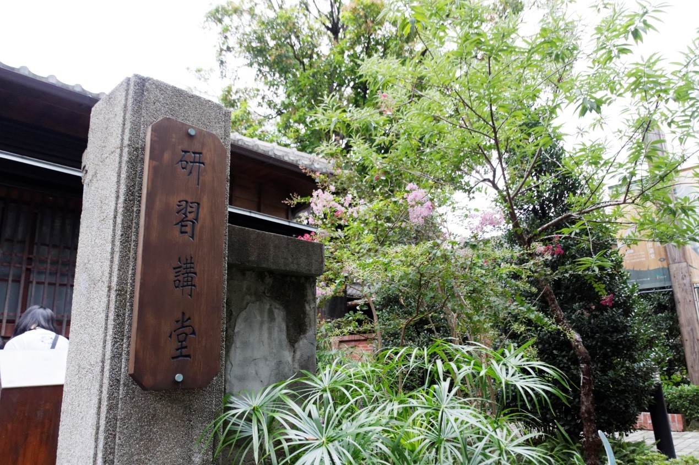
地址： 403台中市西區柳川西路二段158號
是台灣膠彩畫之父林之助，在戰後任教台中師範學校(即現今的台中教育大學)時的學校宿舍，也是林之助教授的創作畫室。他在此居住了整整六十年(1946年入住，至2006年因校方收回宿舍而遷出)。 這棟歷史建築，約興建於1941年後，是日治時期典型的日式官舍建築，一開始即作為台中師範學校之附屬宿舍使用。這裡不僅保留了有關林之助教授的歷史空間與文物，也見證了台中市柳川沿岸的都市發展。 林之助紀念館，以重現林先生的生活情境、創作展示為主，同時兼具膠彩畫推廣展示中心，入門迎接賓客的畫作，是林之助先生於1943年，曾獲日治時代官方府展特選第一名總督賞的「好日」，映上門櫺外夏日綠葉的景色，這「好日」賞來真有另一番情趣。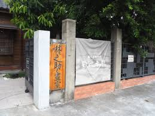
地址： 403台中市西區林森路100巷
台灣近幾年盛行彩繪村風氣，將許多眷村注入新活力，各地彩繪村如雨後春筍般，紛紛打出不同的代表作。「動漫彩繪村」的發跡來自於一片海賊王的彩繪，由於畫風極致細膩、逼真，許多原作情節歷歷在目，馬上在台中打響了知名度。很難相信的是，彩繪的作者竟是機車行老闆，初衷只是「不想讓牆壁空空的」，身為動漫迷的他便開始著手彩繪！ 不久便吸引許多遊客，連鄰居也爭相邀約老闆到自家牆上作畫，全以日本動漫為題材，包含海賊王、火影忍者、鋼彈，甚至是許多七八年級的童年回憶：「皮卡丘、瑪莉兄弟」等等，都一一躍然「牆」上，一條平凡的巷子便成了許多動漫迷前來台中必定朝聖的景點！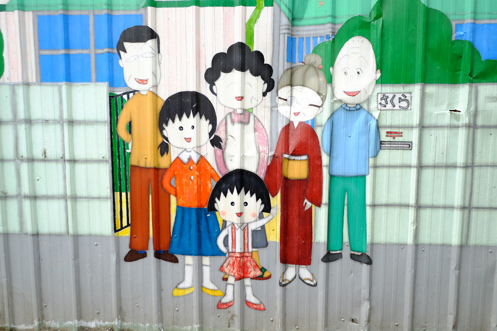